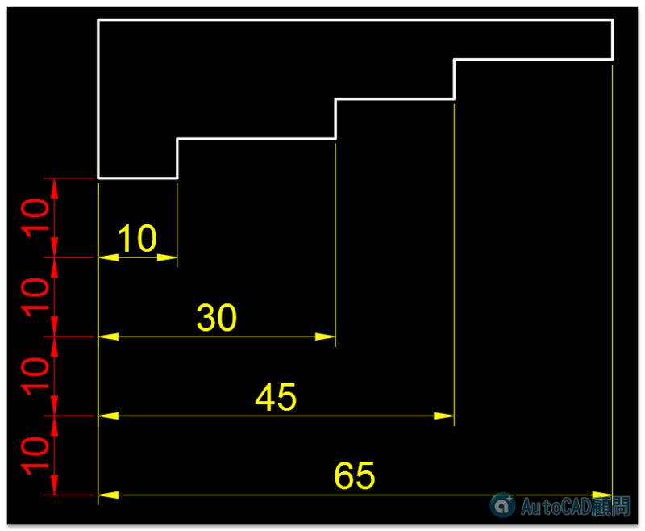

※練習的朋友請上傳DWG圖檔及回覆答案（說明使用的指令及步驟），可以獲得經驗值+6
歡迎加入練習挑戰～
任務：請完成標註尺寸(黃色)，尺寸(黃色)間距為10(紅色)！
DWG範例下載：>> https://goo.gl/4uor4Y <<
分享二種方式影片操作
更多實務測驗▼
※練習的朋友請上傳DWG圖檔及回覆答案（說明使用的指令及步驟），可以獲得經驗…

※練習的朋友請上傳DWG圖檔及回覆答案（說明使用的指令及步驟），可以獲得經驗值+6
歡迎加入練習挑戰～
任務：請完成標註尺寸(黃色)，尺寸(黃色)間距為10(紅色)！
DWG範例下載：>> https://goo.gl/4uor4Y <<